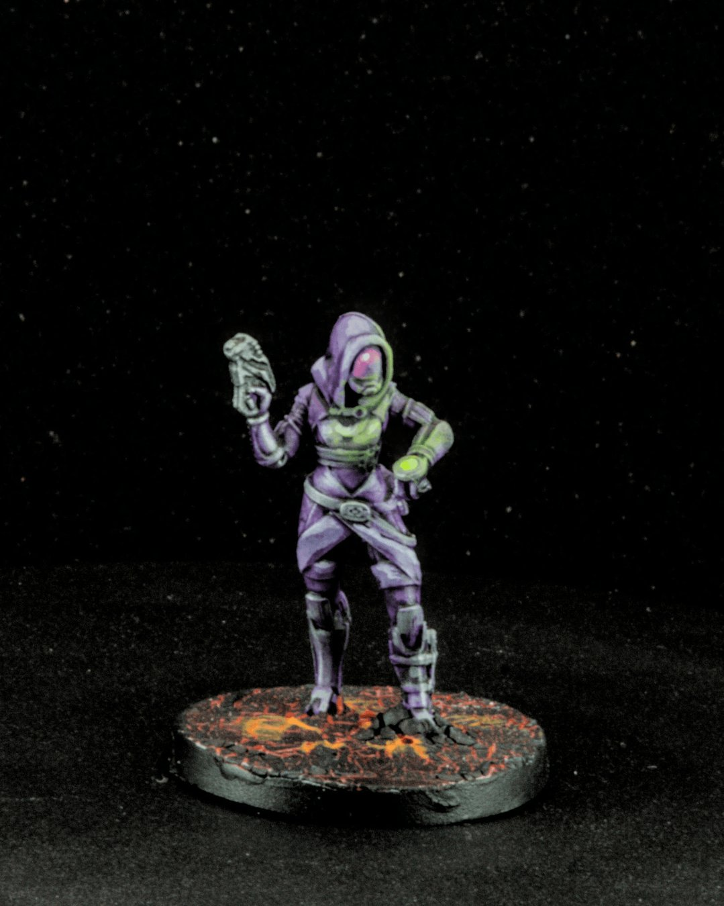
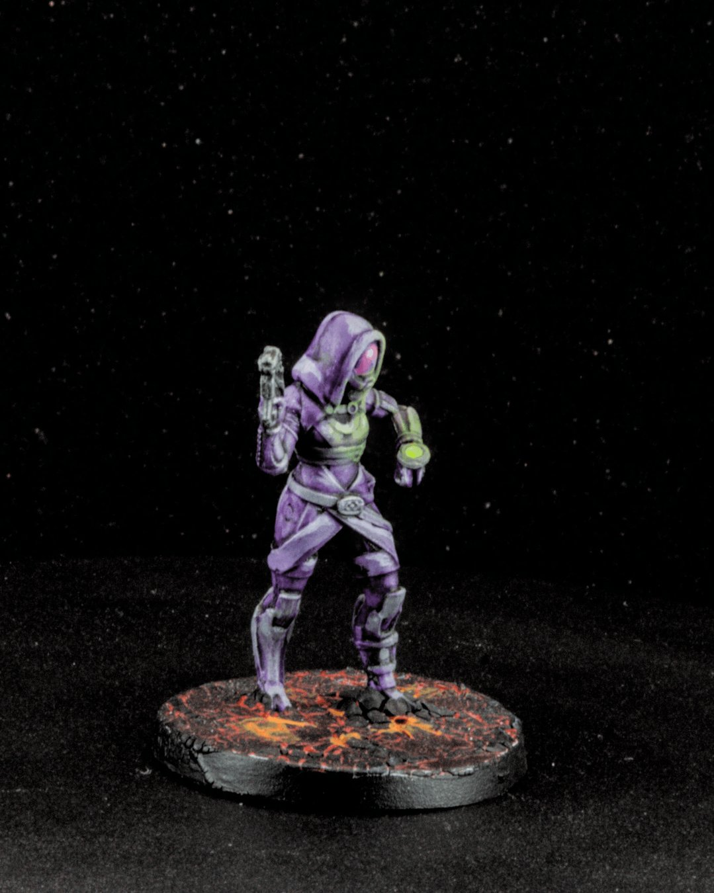
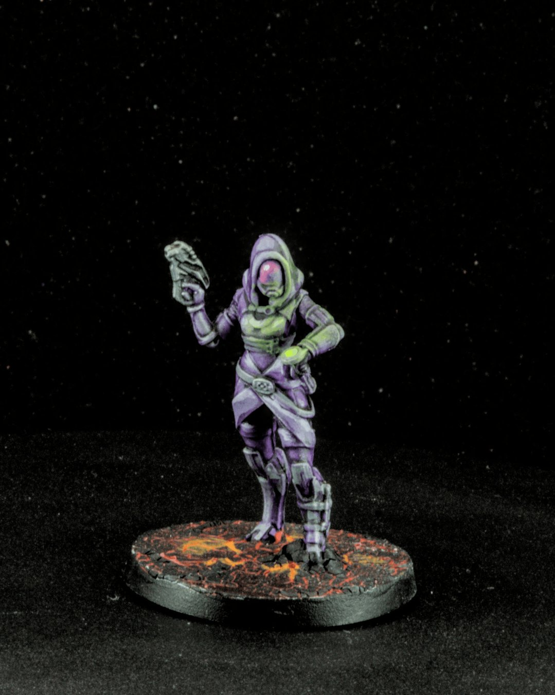
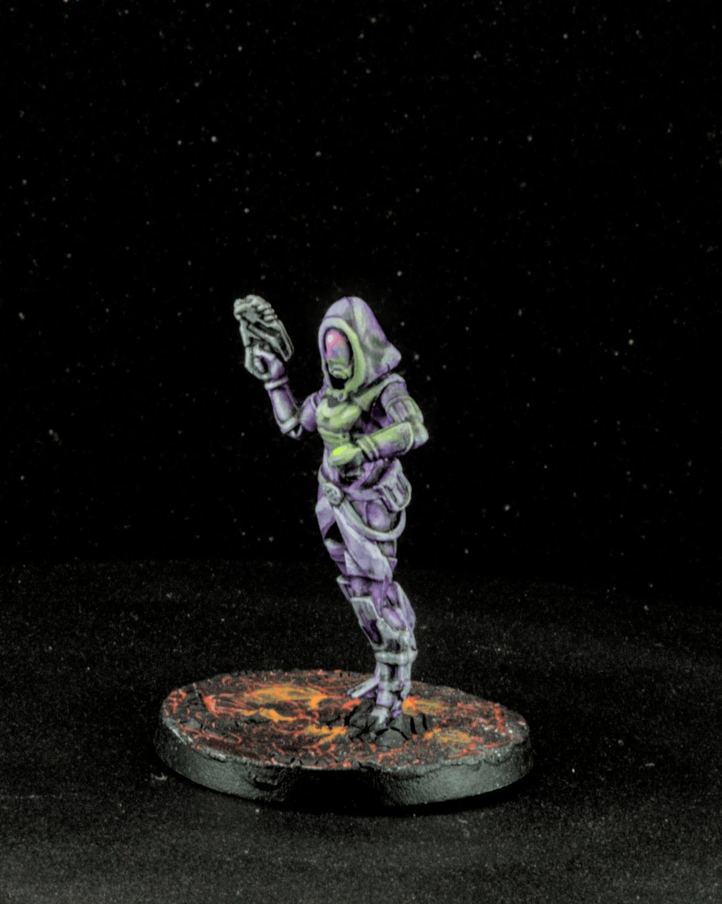
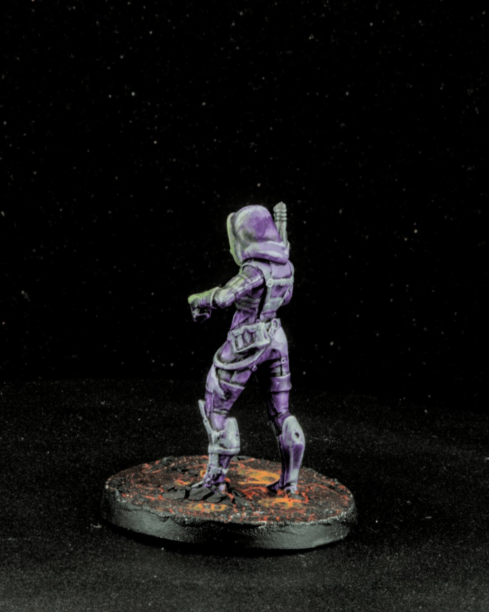
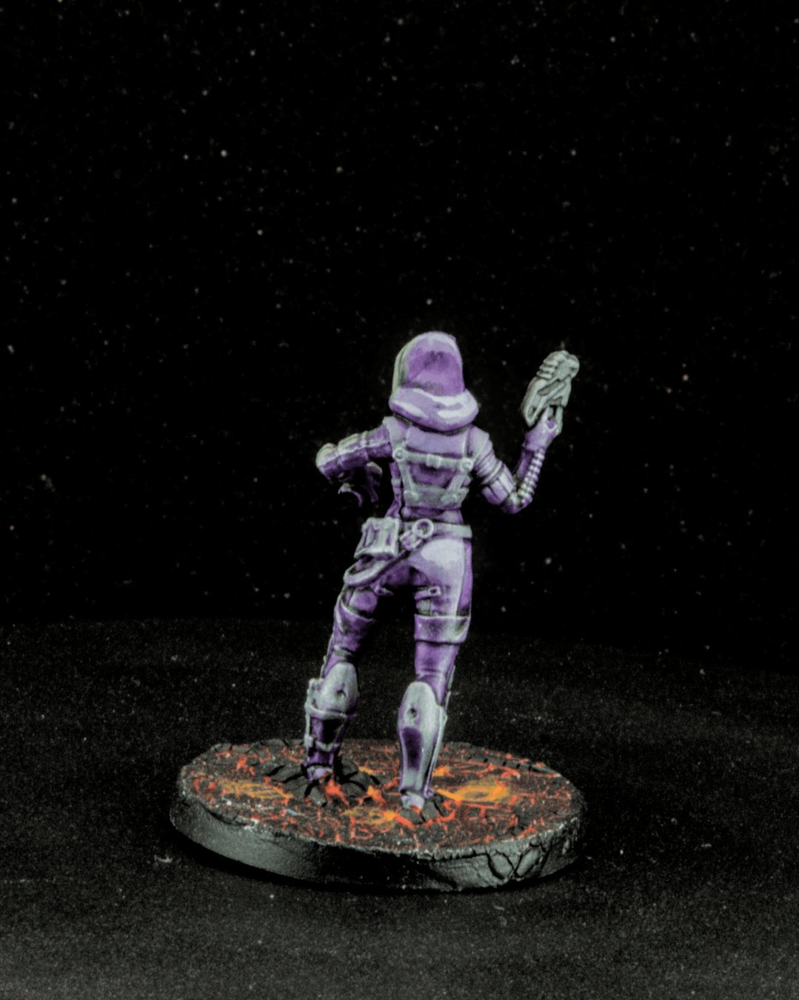
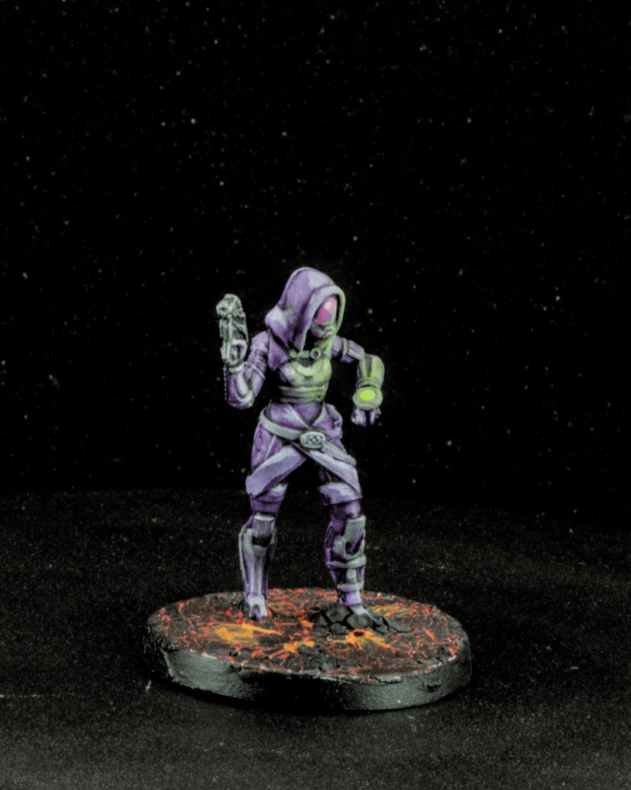

Tali’Zorah vas Normandy
Tali’Zorah vas Normandy
Quarian engineer, problem-solver, and one of the quiet emotional anchors of Mass Effect. Tali’s whole arc is about competence earned through responsibility, carrying the future of her people while still finding space for loyalty, curiosity, and dry humor. Fully sealed behind her suit, yet somehow deeply expressive anyway.
On the paint side, this one was all about control and subtlety. I kept the purples clean and readable, then pushed soft green and pink tones into the visor to give it that internal glow, something that feels alive without stealing the scene. Probably my favorite part of the mini, it’s a small detail but it does a lot of narrative work. The base got a bit of heat and texture to contrast all that cool armor.
Painted from Mass Effect: The Board Game – Priority: Hagalaz by @modiphiusgames, using @thearmypainter paints.
#MiniaturePainting #MassEffect #BoardGames #Miniatures #Painting